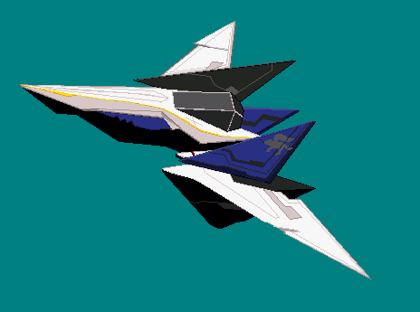

CG-Projekt
Teilnehmer: Simon Katz und Marwin Ludwig
Erste Idee der Geschichte
Name der Geschichte: Angriff im Weltraum
Geschichte: Anfang: Ein Transporter wird in einem Spaceship-Hangar beladen. Danach verlässt dieser den Hangar und fliegt durch den Weltraum.
Mitte: Zwei Piratenschiffe tauchen auf und wollen den Transporter überfallen. Daraufhin sendet der der Transporter eine SOS-Signal aus und flüchtet in ein Meteoritenschauer. Ein Pirat explodiert in dem Meteoritenschauer.
Ende: Ein Schiff in der nähe empfängt das Signal und eilt zur Hilfe. Die Unterstützung verfolgt den anderen Piraten und schießt ihn ab. Der Transporter kann seine Ware abliefern.
Objekte: Spaceship Hangar, Transporter, Unterstützungsschiff, zwei Piratenschiffe, Sterne, Meteoritenschauer
Aussehen: Hangar, Transport, Unterstützungsschiff, zwei Piraten: Space Kit
Sternen: Lichtquelle
Meteoritenschauer: Feld von Steinobjekten
Optional: Galaxie, Hangar mit Außenansicht
Hauptfigur: Transporter
Sinn der Hauptfigur: Verfrachtet wichtige Ware zum Empfänger
Konflikt: Piraten wollen die Ware stehlen
Wie ist der Spannungsverlauf? Tief --> steigt an --> Höhepunkt --> fällt ab
Wie wird die Spannung vermittelt? Einleitung --> Überfall --> Rettung
Sind Wendepunkte zu erkennen? Friedlicher Transport --> wird überfallen, keine Hoffnung --> Rettung
Andere Wendungen der Geschichte? Transporter wird geplündert, Unterstützung kommt zu spät oder gar nicht, es gibt keinen Überfall
Wie ist der Erzählfluss? Ursache --> Folge
Kameraführung: Fester Pfad
Risiken: Zu viel Vorgenommen, Flugwege der Objekte und der Kamera
Umgang: Prioritäten setzen (was ist nötig), einzelne Szenenausschnitte
Welche Features könnten Interessant sein:
Kategorie 0: Modellierung
Partikelsysteme (40P): Für das Schießen und die Explosionen
Optional:
Algorithmisch erzeugte (prozedurale) Geometrie (30P): Für einen Meteoritenschauer
Displacement Mapping (40P): Für das Aussehen der Objekte
Kategorie 1: Kameraeffekte
Fokusunschärfe (20P): Um das Fliegen dynamischer zu machen oder Entfernungen anzudeuten
Notiz: Alle Features außer Fell, Haare (40P) könnten interessant sein.
Kategorie 2: Lokale Beleuchtung
Shadow Mapping (30P): Schattenwurf von den Sternen oder den Geschossen
Spherical Harmonics Illumination (60P): Für das Umgebungslicht
Notiz: Alle anderen Features könnten auch interessant sein.
Kategorie 3: Globale Beleuchtung
Volumetrische Einfachstreuung (50P): Für die Explosion
Optional:
Raytracing-Effekte (50P/80P): Spiegelungen der Spaceships oder auch im Hangar
Kategorie 4: Interaktive Features und Sonstiges
Cinematic Engine (50P): Für die Kamerafahrt und alles dazugehörige
Sound (20P/40P): Für die Atmosphärische Unterstützung
Optional:
Interaktive Anwendung (20P): Man kann mit einzelnen Tasten das Geschehen leicht verändern (Quick-Time-Events).
Storyboard
Spacekit
Modele unseres Projekts
Inspirationsbilder

Grobe Übersicht der Fortschritte
Erstes Model geladen
Model kann sich auf einer Linie positionieren
Model kann jetzt die Linie entlang fliegen, sich dabei rotieren und Schüsse von sich Abgeben
Die Szene bekommt eine änderbare Kamera und Lichtposition
Neues Model aus den Teilen des Spacekits gebaut
Man kann jetzt zwischen mehren Szenen hin und her wechseln und diese speichern.
Zudem wurde ein Shader hinzugefügt

Nun existiert auch eine Skybox
Raumschiffe können explodieren und die Turbinen haben eine Animation
Alle nötigen Szenen speichern und aufnehmen, zusammenschneiden und Musik hinterlegen
Wer hat was Gemacht
Simon Katz: Licht-Position
Objekt-Shader
Objekte: Positionieren, Rotieren, Laserschüsse, Explosion
Objekte: Kurvenpfade zum nachfliegen
Szenen-Kontrolle: Zeitstrahl, Kamerafahrt (Zoom, Position, ...)
Szenen speichern
5 Szenen
Marwin Ludwig: Skybox
Turbine-Animation
Hangar aus den Teilen des SpaceKits
3 Szenen
Szenen aufnehmen, schneiden und mit Musik hinterlegen
Dokumentation
Quellen
SpaceKit: https://www.kenney.nl/assets/space-kit
TinySpline: https://learnopengl.com/In-Practice/2D-Game/Particles
CGAL-Library
Emotes: https://pipoya.itch.io/free-popup-emotes-pack
https://www.kenney.nl/assets/emotes-pack
https://emojipedia.org/thumbs-up/
LearnOpenGL: https://learnopengl.com/In-Practice/2D-Game/Particles